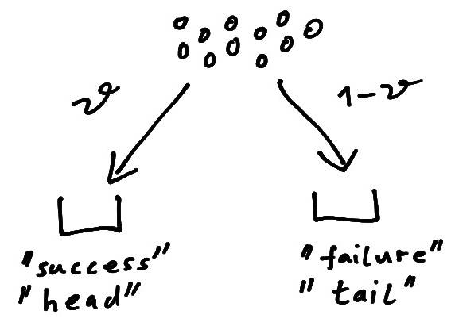
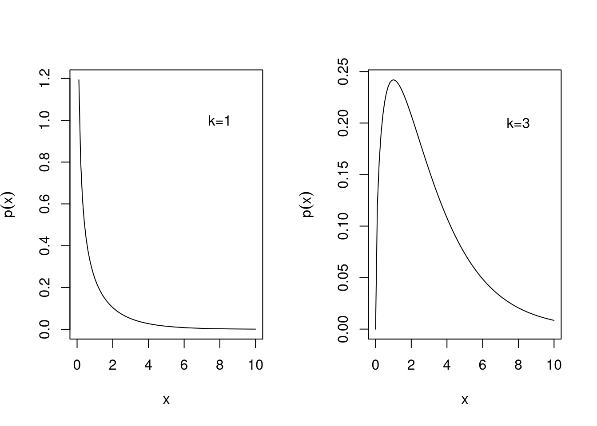

4 Univariate distributions
4.1 Binomial distribution
The binomial distribution \(\operatorname{Bin}(n, \theta)\) is a discrete distribution counting binary outcomes.
The Bernoulli distribution \(\operatorname{Ber}(\theta)\) is a special case of the binomial distribution.
Standard parametrisation
A binomial random variable \(x\) describes the number of successful outcomes in \(n\) identical and independent trials. We write \[ x \sim \operatorname{Bin}(n, \theta)\, \] where \(\theta \in [0,1]\) is the probability of a positive outcome (“success”) in a single trial. Conversely, \(1-\theta \in [0,1]\) is the complementary probability (“failure”). The support is \(x \in \{ 0, 1, 2, \ldots, n\}\) which notably depends on \(n\).

The binomial distribution is often motivated by a coin tossing experiment where \(\theta\) is the probability of “head” when flipping the coin and \(x\) is the number of observed “heads” among \(n\) throws. Another common interpretation is that of an urn model where \(n\) items are distributed into two bins (Figure 4.1). Here \(\theta\) is the probability to put an item into one urn (representing “success”, “head”) and \(1-\theta\) the probability to put it in the other urn (representing “failure”, “tail”).
The expected value is \[ \operatorname{E}(x) = n \theta \] and the variance is \[ \operatorname{Var}(x) = n \theta (1 - \theta) \]
The corresponding pmf is \[ p(x | n, \theta) = W_2\, \theta^x (1 - \theta)^{n - x} \] The binomial coefficient \[ W_2 = \binom{n}{x} \] in the pmf accounts for the number of possible permutations of \(n\) items of two distinct types (“success” and “failure”). Note that the binomial coefficient \(W_2\) does not depend on \(\theta\).
TipR code
The pmf of the binomial distribution is given by dbinom(), the distribution function is pbinom() and the quantile function is qbinom(). The corresponding random number generator is rbinom().
Mean parametrisation
Instead of \(\theta\) one may also use a mean parameter \(\mu \in [0,n]\) so that \[ x \sim \operatorname{Bin}\left(n, \theta= \frac{\mu}{n}\right) \] The mean parameter \(\mu\) can be obtained from \(\theta\) and \(n\) by \(\mu = n \theta\).
The mean and variance of the binomial distribution expressed in terms of \(\mu\) and \(n\) are \[ \operatorname{E}(x) = \mu \] and \[ \operatorname{Var}(x) = \mu - \frac{\mu^2}{n} \]
Special case: Bernoulli distribution
For \(n=1\) the binomial distribution reduces to the Bernoulli distribution \(\operatorname{Ber}(\theta)\). This is the simplest of all distribution families and is named after Jacob Bernoulli (1655-1705) who also discovered the law of large numbers.
If a random variable \(x\) follows the Bernoulli distribution we write \[ x \sim \operatorname{Ber}(\theta) \] with “success” probability \(\theta \in [0,1]\). Conversely, the complementary “failure” probability is \(1-\theta \in [0,1]\). The support is \(x \in \{0, 1\}\). The variable \(x\) acts as an indicator variable, with “success” indicated by \(x=1\) and “failure” indicated by \(x=0\).
Often the Bernoulli distribution is referred to as “coin flipping” model. Then \(\theta\) is the probability of “head” and \(1-\theta\) the complementary probability of “tail” and \(x=1\) corresponds to the outcome “head” and \(x=0\) to the outcome “tail”.
The expected value is \[ \operatorname{E}(x) = \theta \] and the variance is \[ \operatorname{Var}(x) = \theta (1 - \theta) \]
The pmf of \(\operatorname{Ber}(\theta)\) is \[ p(x | \theta ) = \theta^{x} (1-\theta)^{1-x} = \begin{cases} \theta & \text{if } x = 1 \\ 1-\theta & \text{if } x = 0 \\ \end{cases} \]
Convolution property and normal approximation
The convolution of \(n\) binomial distributions, each with identical success probability \(\theta\) but possibly different number of trials \(n_i\), yields another binomial distribution with the same parameter \(\theta\): \[ \sum_{i=1}^n \operatorname{Bin}(n_i, \theta) \sim \operatorname{Bin}\left(\sum_{i=1}^n n_i, \theta\right) \]
It follows that the binomial distribution with \(n\) trials is the result of the convolution of \(n\) Bernoulli distributions: \[ \sum_{i=1}^n \operatorname{Ber}(\theta) \sim \operatorname{Bin}(n, \theta) \] Thus, repeating the same Bernoulli trial \(n\) times and counting the total number of successes yields a binomial random variable.
As a consequence, following the central limit theorem (Section 3.3), for large \(n\) the binomial distribution can be well approximated by a normal distribution (Section 4.3) with the same mean and variance. This is known as the De Moivre–Laplace theorem.
4.2 Beta distribution
The beta distribution \(\operatorname{Beta}(\alpha_1, \alpha_2)\) is a continuous distribution that is useful to model proportions or probabilities for \(K=2\) classes.
It includes the uniform distribution over the unit interval as a special case.
Standard parametrisation
A beta-distributed random variable is denoted by \[ x \sim \operatorname{Beta}(\alpha_1, \alpha_2) \] with shape parameters \(\alpha_1>0\) and \(\alpha_2>0\). Let \(m = \alpha_1 +\alpha_2\). The support of \(x\) is the unit interval given by \(x \in [0,1]\). Thus, the beta distribution is defined over a one-dimensional space.

A beta random variable can be visualised as breaking a unit stick of length one into two pieces of length \(x_1=x\) and \(x_2 = 1-x\) (Figure 4.2). Thus, the \(x_i\) may be used as the exclusive proportions or probabilities for \(K=2\) classes.
The mean is \[ \operatorname{E}(x) = \operatorname{E}(x_1) = \frac{\alpha_1}{m} \] and hence \[ \operatorname{E}(1-x) = \operatorname{E}(x_2) = \frac{\alpha_2}{m} \]
The variance is \[ \operatorname{Var}(x) = \operatorname{Var}(x_1) = \operatorname{Var}(x_2) = \frac{\alpha_1 \alpha_2}{m^2 (m+1) } \]
The pdf of the beta distribution \(\operatorname{Beta}(\alpha_1, \alpha_2)\) is \[
p(x | \alpha_1, \alpha_2) = \frac{1}{B(\alpha_1, \alpha_2)} x^{\alpha_1-1} (1-x)^{\alpha_2-1}
\] In this density the beta function
\[
B(\alpha_1, \alpha_1) = \frac{ \Gamma(\alpha_1) \Gamma(\alpha_2)}{\Gamma(\alpha_1+\alpha_2)}
\] serves as normalisation factor.
The beta distribution can assume a number of different shapes, depending on the values of \(\alpha_1\) and \(\alpha_2\) (see Figure 4.3).
TipR code
The pdf of the beta distribution is given by dbeta(), the distribution function is pbeta() and the quantile function is qbeta(). The corresponding random number generator is rbeta().
Mean parametrisation
Instead of employing \(\alpha_1\) and \(\alpha_2\) as parameters another useful reparametrisation of the beta distribution is in terms of a mean parameter \(\mu \in [0,1]\) and a concentration parameter \(m > 0\) so that \[ x \sim \operatorname{Beta}(\alpha_1 = m \mu, \alpha_2= m (1-\mu)) \] The concentration and mean parameters can be obtained from \(\alpha_1\) and \(\alpha_2\) by \(m = \alpha_1+\alpha_2\) and \(\mu = \alpha_1/m\).
The mean and variance of the beta distribution expressed in terms of \(\mu\) and \(m\) are \[ \operatorname{E}(x) = \mu \] and \[ \operatorname{Var}(x)=\frac{\mu (1-\mu)}{m+1} \] With increasing concentration parameter \(m\) the variance decreases and thus the probability mass becomes more concentrated around the mean.
Special case: symmetric beta distribution
For \(\alpha_1=\alpha_2=\alpha\) the beta distribution becomes the symmetric beta distribution with a single shape parameter \(\alpha>0\). In mean parametrisation the symmetric beta distribution corresponds to \(\mu=1/2\) and \(m=2 \alpha\).
Special case: uniform distribution
For \(\alpha_1=\alpha_2=1\) the beta distribution becomes the uniform distribution over the unit interval with pdf \(p(x)=1\). In mean parametrisation the uniform distribution corresponds to \(\mu=1/2\) and \(m=2\).
4.3 Normal distribution
The normal distribution \(N(\mu, \sigma^2)\) is the most important continuous probability distribution. It is also called Gaussian distribution named after Carl Friedrich Gauss (1777–1855).
Special cases are the standard normal distribution \(N(0, 1)\) and the delta distribution \(\delta\).
Standard parametrisation
The univariate normal distribution \(N(\mu, \sigma^2)\) has two parameters \(\mu\) (location) and \(\sigma^2 > 0\) (variance) and support \(x \in \mathbb{R}\).
If a random variable \(x\) is normally distributed we write \[ x \sim N(\mu,\sigma^2) \] with mean \[ \operatorname{E}(x)=\mu \] and variance \[ \operatorname{Var}(x) = \sigma^2 \]
The pdf is given by \[ \begin{split} p(x| \mu, \sigma^2) &=(2\pi\sigma^2)^{-1/2} \exp\left(-\frac{(x-\mu)^2}{2\sigma^2}\right)\\ &=(\sigma^2)^{-1/2} (2\pi)^{-1/2} e^{-\Delta^2/2}\\ \end{split} \] Here \(\Delta^2 = (x-\mu)^2/\sigma^2\) is the squared distance between \(x\) and \(\mu\) weighted by the variance \(\sigma^2\), also known as squared Mahalanobis distance.
The normal distribution is sometimes also used by specifying the precision \(1/\sigma^2\) instead of the variance \(\sigma^2\).
TipR code
The normal pdf is given by dnorm(), the distribution function is pnorm() and the quantile function is qnorm(). The corresponding random number generator is rnorm().
Scale parametrisation
Instead of the variance parameter \(\sigma^2\) it is often also convenient to use the standard deviation \(\sigma=\sqrt{\sigma^2} > 0\) as scale parameter. Similarly, instead of the precision \(1/\sigma^2\) one may wish to use the inverse standard deviation \(w = 1/\sigma\).
The scale parametrisation is central for location-scale transformations (see below).
Special case: standard normal distribution
The standard normal distribution \(N(0, 1)\) has mean \(\mu=0\) and variance \(\sigma^2=1\). The corresponding pdf is \[ p(x)=(2\pi)^{-1/2} e^{-x^2/2} \] with the squared Mahalanobis distance reduced to \(\Delta^2=x^2\).
The cumulative distribution function (cdf) of the standard normal \(N(0,1)\) is \[ \Phi (x ) = \int_{-\infty}^{x} p(x'| \mu=0, \sigma^2=1) dx' \] There is no analytic expression for \(\Phi(x)\). The inverse \(\Phi^{-1}(p)\) is called the quantile function of the standard normal distribution.
Figure 4.4 shows the pdf and cdf of the standard normal distribution.
Special case: delta distribution
The delta distribution \(\delta\) is obtained as the limit of \(N(0, \varepsilon \sigma^2)\) for \(\varepsilon \rightarrow 0\) and where \(\sigma^2\) is a positive number (e.g. \(\sigma^2=1\)). Thus \(\delta\) is a distribution that behaves like an infinite spike at zero.
The corresponding pdf \(\delta(x)\) is called the Dirac delta function, even though it is not an ordinary function. It satisfies \(\delta(x)=0\) for all \(x\neq 0\) and integrates to one, thus representing a point mass at zero.
Location-scale transformation
Let \(\sigma > 0\) be the positive square root of the variance \(\sigma^2\) and \(w=1/\sigma\).
If \(x \sim N(\mu, \sigma^2)\) then \(y=w(x-\mu) \sim N(0, 1)\). This location-scale transformation corresponds to centring and standardisation of a normal random variable, reducing it to a standard normal random variable.
Conversely, if \(y \sim N(0, 1)\) then \(x = \mu + \sigma y \sim N(\mu, \sigma^2)\). This location-scale transformation generates the normal distribution from the standard normal distribution.
Convolution property
The convolution of \(n\) independent, but not necessarily identical, normal distributions results in another normal distribution with corresponding mean and variance: \[ \sum_{i=1}^n N(\mu_i, \sigma^2_i) \sim N\left( \sum_{i=1}^n \mu_i, \sum_{i=1}^n \sigma^2_i \right) \] Hence, any normal random variable can be constructed as the sum of \(n\) suitable independent normal random variables.
Since \(n\) is an arbitrary positive integer the normal distribution is said to be infinitely divisible.
4.4 Gamma distribution
The gamma distribution \(\operatorname{Gam}(\alpha, \theta)\) is another widely used continuous distribution and is also known as univariate Wishart distribution \(\operatorname{Wis}\left(s^2, k \right)\) using a different parametrisation.
It contains as special cases the scaled chi-squared distribution \(s^2 \chi^2_{k}\) (two parameter restrictions) as well as the univariate standard Wishart distribution \(\operatorname{Wis}\left(1, k \right)\), the chi-squared distribution \(\chi^2_{k}\) and the exponential distribution \(\operatorname{Exp}(\theta)\) (one parameter restrictions). Figure 4.5 illustrates the relationship of the gamma and the univariate Wishart distribution with these related distributions.
Standard parametrisation
The gamma distribution \(\operatorname{Gam}(\alpha, \theta)\) is a continuous distribution with two parameters \(\alpha>0\) (shape) and \(\theta>0\) (scale): \[ x \sim\operatorname{Gam}(\alpha, \theta) \] and support \(x \in [0, \infty[\) with mean \[\operatorname{E}(x)=\alpha \theta\] and variance \[\operatorname{Var}(x) = \alpha \theta^2\]
The gamma distribution is also often used with a rate parameter \(\beta=1/\theta\). Therefore one needs to pay attention which parametrisation is used.
The pdf is \[ p(x| \alpha, \theta)=\frac{1}{\Gamma(\alpha) \theta^{\alpha} } x^{\alpha-1} e^{-x/\theta} \] In this density the gamma function \[ \Gamma(x) = \int_0^\infty t^{x-1} e^{-t} dt \] is part of the normalisation factor.
The gamma function can also be used as continuous version of the factorial as \(\Gamma(x) = (x-1)!\) for any positive integer \(x\).
TipR code
The pdf of the gamma distribution is available in the function dgamma(), the distribution function is pgamma() and the quantile function is qgamma(). The corresponding random number generator is rgamma().
Wishart parametrisation
The gamma distribution is often used with a different set of parameters \(s^2 =\theta/2 > 0\) (scale) and \(k=2 \alpha > 0\) (shape or concentration). In this form it is known as univariate or one-dimensional Wishart distribution \[ x \sim \operatorname{Wis}\left(s^2, k \right) = \operatorname{Gam}\left(\alpha=\frac{k}{2}, \theta=2 s^2\right) \] named after John Wishart (1898–1954).
In the above the scale parameter \(s^2\) is a scalar and hence the resulting Wishart distribution is univariate. If instead a matrix-valued scale parameter \(\boldsymbol S\) is used this yields the multivariate or \(d\)-dimensional Wishart distribution, see Section 5.4.
In the Wishart parametrisation the mean is \[ \operatorname{E}(x) = k s^2 \] and the variance \[ \operatorname{Var}(x) = 2 k s^4 \] The pdf in terms of \(s^2\) and \(k\) is \[ p(x| s^2, k)=\frac{1}{\Gamma(k/2) (2 s^2)^{k/2} } x^{(k-2)/2} e^{-s^{-2}x/2} \]
Mean parametrisation
Finally, we also often employ the Wishart resp. gamma distribution in mean parametrisation \[ x \sim \operatorname{Wis}\left(s^2= \frac{\mu}{k}, k \right) = \operatorname{Gam}\left(\alpha=\frac{k}{2}, \theta=\frac{2 \mu}{k}\right) \] with parameters \(\mu = k s^2 >0\) and \(k > 0\). In this parametrisation the mean is \[ \operatorname{E}(x) = \mu \] and the variance \[ \operatorname{Var}(x) = \frac{2 \mu^2}{k} \]
Special case: univariate standard Wishart distribution
For \(s^2=1\) the univariate Wishart distribution reduces to the univariate standard Wishart distribution \[ x \sim \operatorname{Wis}\left(1, k \right) = \operatorname{Gam}\left(\alpha=\frac{k}{2}, \theta=2\right) \] with mean \[ \operatorname{E}(x) = k \] and variance \[ \operatorname{Var}(x) = 2 k \]
The pdf is \[ p(x| k)=\frac{1}{\Gamma(k/2) 2^{k/2} } x^{(k-2)/2} e^{-x/2} \]
Special case: scaled chi-squared distribution
If the shape parameter \(k\) of the Wishart distribution \(\operatorname{Wis}\left(s^2, k \right)\) is restricted to the positive integers \(k \in \{1, 2, \ldots\}\) the Wishart distribution becomes the scaled chi-squared distribution \(s^2 \chi^2_{k}\) where \(k\) is called the degree of freedom.
This is equivalent to restricting the shape parameter \(\alpha\) of the gamma distribution \(\operatorname{Gam}(\alpha=k/2, \theta=2 s^2)\) to \(\alpha \in \{1/2, 1, 3/2, 2, \ldots\}\).
The scaled chi-squared distribution with \(k=1\) is the distribution of a squared normal random variable with mean zero. Specifically, if \(z \sim N(0, s^2)\) then \(z^2 \sim s^2 \chi^2_{1}= \operatorname{Wis}(s^2, 1)=N(0, s^2)^2\).
Special case: chi-squared distribution

If \(k\) is restricted to the positive integers \(k \in\{1, 2, \ldots\}\) the univariate standard Wishart distribution reduces to the chi-squared distribution \[ x \sim \chi^2_{k}=\operatorname{Wis}\left(s^2=1, k \right)=\operatorname{Gam}\left(\alpha=\frac{k}{2}, \theta=2\right) \] where \(k\) is called the degree of freedom.
The chi-squared distribution has mean \[ \operatorname{E}(x)=k \] and variance \[ \operatorname{Var}(x)=2k \]
Figure 4.6 shows the pdf of the chi-squared distribution for degrees of freedom \(k=1\) and \(k=3\).
The chi-squared distribution with \(k=1\) is the distribution of a squared standard normal random variable. Specifically, if \(z \sim N(0, 1)\) then \(z^2 \sim \chi^2_{1} = \operatorname{Wis}(1,1)=N(0,1)^2\).
TipR code
The pdf of the chi-squared distribution is given by dchisq(). The distribution function is pchisq() and the quantile function is qchisq(). The corresponding random number generator is rchisq().
Special case: exponential distribution
If the shape parameter \(\alpha\) of the gamma distribution \(\operatorname{Gam}(\alpha, \theta)\) is set to \(\alpha=1\), or if the shape parameter \(k\) of the Wishart distribution \(\operatorname{Wis}(s^2, k)\) is set to \(k=2\), we obtain the exponential distribution \[ x \sim \operatorname{Exp}(\theta) = \operatorname{Gam}(\alpha=1, \theta) = \operatorname{Wis}(s^2=\theta/2, k=2) \] with scale parameter \(\theta\).
It has mean \[ \operatorname{E}(x)=\theta \] and variance \[ \operatorname{Var}(x) = \theta^2 \] and the pdf is \[ p(x| \theta)=\theta^{-1} e^{-x/\theta} \]
Just like the gamma distribution the exponential distribution is also often specified using a rate parameter \(\beta= 1/\theta\) instead of a scale parameter \(\theta\).
TipR code
The command dexp() returns the pdf of the exponential distribution, pexp() is the distribution function and qexp() is the quantile function. The corresponding random number generator is rexp().
Scale transformation
If \(x \sim \operatorname{Gam}(\alpha, \theta)\) then the scaled random variable \(b x\) with \(b>0\) is also gamma distributed with \(b x \sim \operatorname{Gam}(\alpha, b \theta)\).
Hence,
- \(\theta \, \operatorname{Gam}(\alpha, 1) = \operatorname{Gam}(\alpha, \theta)\),
- \(\theta \, \operatorname{Exp}(1) = \operatorname{Exp}(\theta)\),
- \((\mu / k) \, \operatorname{Wis}(1, k) = \operatorname{Wis}(s^2= \mu/k, k)\) and
- \(s^2 \, \operatorname{Wis}(1, k) = \operatorname{Wis}(s^2, k)\).
As \(\chi^2_{k}\) equals \(\operatorname{Wis}(1, k)\) the last example demonstrates that the scaled chi-squared distribution \(s^2 \chi^2_{k}\) equals the univariate Wishart distribution \(\operatorname{Wis}(s^2, k)\).
Convolution property
The convolution of \(n\) gamma distributions with the same scale parameter \(\theta\) but possible different shape parameters \(\alpha_i\) yields another gamma distribution: \[ \sum_{i=1}^n \operatorname{Gam}(\alpha_i, \theta) \sim \operatorname{Gam}\left( \sum_{i=1}^n \alpha_i, \theta \right) \] Thus, any gamma random variable can be obtained as the sum of \(n\) suitable independent gamma random variables.
In Wishart parametrisation this becomes \[ \sum_{i=1}^n \operatorname{Wis}(s^2, k_i) \sim \operatorname{Wis}\left(s^2, \sum_{i=1}^n k_i\right) \]
As a result, since \(n\) is an arbitrary positive integer, the gamma resp. univariate Wishart distribution is infinitely divisible.
The above includes the following two specific constructions:
If \(x_1, \ldots, x_n \sim \operatorname{Exp}(\theta)\) are independent samples from \(\operatorname{Exp}(\theta)\) then the sum \(y = \sum_{i=1}^n x_i \sim \operatorname{Gam}(\alpha=n, \theta)\) is gamma distributed with the same scale parameter.
The sum of \(k\) independent scaled chi-squared random variables \(s^2 \chi^2_{1}\) with one degree of freedom and identical scale parameter \(s^2\) yields a scaled chi-squared random variable \(s^2 \chi^2_{k}\) with degree of freedom \(k\) and the same scale parameter. Thus, if \(z_1,z_2,\dots,z_k\sim N(0,1)\) are \(k\) independent samples from \(N(0,1)\) then \(\sum_{i=1}^{k} z_i^2 \sim \chi^2_{k}\).
4.5 Inverse gamma distribution
The inverse gamma distribution \(\operatorname{IG}(\alpha, \beta)\) is a continuous distribution and is also known as univariate inverse Wishart distribution \(\operatorname{IW}(\psi, k)\) using a different parametrisation. It is linked to the gamma distribution \(\operatorname{Gam}(\alpha, \theta)\) aka univariate Wishart distribution \(\operatorname{Wis}\left(s^2, k \right)\) (Section 4.4).
Special cases include the inverse chi-squared distribution \(\text{Inv-$\chi^2_{k}$}\) and the scaled inverse chi-squared distribution \(s^2 \text{Inv-$\chi^2_{k}$}\).
Standard parametrisation
A random variable \(x\) following an inverse gamma distribution is denoted by \[ x \sim \operatorname{IG}(\alpha, \beta) \] with two parameters \(\alpha >0\) (shape parameter) and \(\beta >0\) (scale parameter) and support \(x >0\).
The mean of the inverse gamma distribution is (for \(\alpha>1\)) \[ \operatorname{E}(x) = \frac{\beta}{\alpha-1} \] and the variance (for \(\alpha>2\)) \[ \operatorname{Var}(x) = \frac{\beta^2}{(\alpha-1)^2 (\alpha-2)} \]
The inverse gamma distribution \(\operatorname{IG}(\alpha, \beta)\) has pdf \[ p(x | \alpha, \beta) = \frac{\beta^{\alpha}}{\Gamma(\alpha)} x^{-\alpha-1} e^{-\beta/x} \]
The inverse gamma distribution and the gamma distribution are directly linked. If \(x \sim \operatorname{IG}(\alpha, \beta)\) then the inverse of \(x\) is gamma distributed with inverted scale parameter \[ \frac{1}{x} \sim \operatorname{Gam}(\alpha, \theta=\beta^{-1}) \] where \(\alpha\) is the shape parameter and \(\theta\) the scale parameter of the gamma distribution.
TipR code
The extraDistr package implements the inverse gamma distribution. The function extraDistr::dinvgamma() provides the pdf, extraDistr::pinvgamma() the distribution function and extraDistr::qinvgamma() is the quantile function. The corresponding random number generator is extraDistr::rinvgamma().
Wishart parametrisation
The inverse gamma distribution is frequently used with a different set of parameters \(\psi = 2\beta\) (scale parameter) and \(k = 2\alpha\) (shape parameter). In this form it is called univariate inverse Wishart distribution \[ x \sim \operatorname{IW}(\psi, k) = \operatorname{IG}\left(\alpha=\frac{k}{2}, \beta=\frac{\psi}{2}\right) \]
In the above the scale parameter \(\psi\) is scalar and hence the resulting inverse Wishart distribution is univariate. If instead a matrix-valued scale parameter \(\boldsymbol \Psi\) is used this yields the multivariate or \(d\)-dimensional inverse Wishart distribution, see Section 5.5.
In the Wishart parametrisation the mean is (for \(k>2\)) \[ \operatorname{E}(x) = \frac{\psi}{k-2} \] and the variance is (for \(k >4\)) \[ \operatorname{Var}(x) =\frac{2 \psi^2}{(k-4) (k-2)^2 } \]
The pdf in terms of \(\psi\) and \(k\) is \[ p(x | \psi, k) = \frac{(\psi/2)^{(k/2)}}{\Gamma(k/2)} \, x^{-(k+2)/2}\, e^{-\psi x^{-1}/2} \]
The univariate inverse Wishart and the univariate Wishart distributions are linked. If \(x \sim \operatorname{IW}(\psi, k)\) then the inverse of \(x\) is Wishart distributed with inverted scale parameter: \[ \frac{1}{x} \sim \operatorname{Wis}(s^2=\psi^{-1}, k) \] where \(k\) is shape parameter and \(s^2\) the scale parameter of the Wishart distribution.
Mean parametrisation
Instead of \(\psi\) and \(k\) we may also equivalently use \(\mu = \psi/(\nu-2)\) and \(\kappa=\nu-2\) as parameters for the univariate inverse Wishart distribution, so that \[ x \sim \operatorname{IW}(\psi=\kappa \mu, k=\kappa+2) = \operatorname{IG}\left(\alpha=\frac{\kappa+2}{2}, \beta=\frac{\mu \kappa}{2}\right) \] has mean (for \(\kappa>0\)) \[\operatorname{E}(x) = \mu\] and the variance (for \(\kappa>2\)) \[\operatorname{Var}(x) = \frac{2 \mu^2}{\kappa-2}\]
The mean parametrisation is useful in Bayesian analysis when employing the inverse gamma aka univariate inverse Wishart distribution as prior and posterior distribution.
Biased mean parametrisation
Using \(\tau^2= \frac{\psi}{k}\) as biased mean parameter together with \(\nu=k\) we arrive at the biased mean parametrisation \[ x \sim \operatorname{IW}(\psi= \nu \tau^2, k=\nu ) = \operatorname{IG}\left(\alpha=\frac{\nu}{2}, \beta=\frac{\nu \tau^2}{2}\right) \] with mean (for \(\nu>2\)) \[ \operatorname{E}(x) = \frac{ \nu}{\nu-2} \tau^2 = \mu \] and variance (\(\nu >4\)) \[ \operatorname{Var}(x) = \left(\frac{\nu}{\nu-2}\right)^2 \frac{2 \tau^4}{\nu-4} \] As \(\tau^2 = \mu (\nu-2)/\nu\) for large \(\nu\) the parameter \(\tau^2\) will become identical to the true mean \(\mu\).
This parametrisation is useful to derive the location-scale \(t\)-distribution with its matching parameters (see Section 4.6). It is also common in Bayesian analysis.
Special case: inverse chi-squared distribution
If the scale parameter in \(\operatorname{IW}(\psi, k)\) is set to \(\psi=1\) and \(k\) is restricted to the positive integers \(\{1, 2, \ldots\}\) then the univariate inverse Wishart distribution reduces to the inverse chi-squared distribution \[ x \sim \text{Inv-$\chi^2_{k}$}=\operatorname{IW}(\psi=1, k)= \operatorname{IG}\left(\alpha=\frac{k}{2}, \beta=\frac{1}{2}\right) \] where \(k\) is called the degree of freedom.
The inverse chi-squared distribution has mean (for \(k>2\)) \[ \operatorname{E}(x) = \frac{1}{k-2} \] and the variance is (for \(k >4\)) \[ \operatorname{Var}(x) =\frac{2}{(k-2)^2 (k-4) } \]
The inverse chi-squared distribution and the chi-squared distribution are linked. If \(x \sim \text{Inv-$\chi^2_{k}$}\) then the inverse of \(x\) is chi-squared distributed: \[ \frac{1}{x} \sim \chi^2_{k} \] where \(k\) is the degree of freedom.
Scale transformation
If \(x \sim \operatorname{IG}(\alpha, \beta)\) then the scaled random variable \(b x\) with \(b>0\) is also inverse gamma distributed with \(b x \sim \operatorname{IG}(\alpha, b \beta)\).
Hence,
- \(\beta \, \operatorname{IG}(\alpha, 1) = \operatorname{IG}(\alpha, \beta)\),
- \(\psi \, \operatorname{IW}(1, k) = \operatorname{IW}(\psi, k)\),
- \(\kappa \mu \,\operatorname{IW}(1, k=\kappa+2) = \operatorname{IW}(\psi=\kappa \mu, k=\kappa+2)\) and
- \(\nu \tau^2 \, \operatorname{IW}(1, k=\nu) = \operatorname{IW}(\psi=\nu \tau^2, k=\nu)\)
As \(\text{Inv-$\chi^2_{k}$}\) equals \(\operatorname{IW}(\psi=1, k)\) the scaled inverse chi-squared distribution \(\psi \text{Inv-$\chi^2_{k}$}\) is thus equivalent to the univariate inverse Wishart distribution \(\operatorname{IW}(\psi, k)\). If a random variable follows the scaled inverse chi-squared distribution its inverse follows the corresponding scaled chi-squared distribution. Specifically, if \(x \sim \psi \, \text{Inv-$\chi^2_{k}$}\) then \(1/x \sim \psi^{-1}\, \chi^2_{k}\).
The scaled inverse chi-squared distribution is frequently used in the biased mean parametrisation with \(\tau = \psi/\nu\) and \(\nu=k\). Then \(\psi \, \text{Inv-$\chi^2_{k}$}\) is equal to \(\nu \tau^2 \, \text{Inv-$\chi^2_{\nu}$} = \operatorname{IW}(\psi=\nu \tau^2, k=\nu)\) which is sometimes also written as \(\text{Inv-$\chi^2_{}$}(\nu, \tau^2)\). If \(x \sim \nu \tau^2 \, \text{Inv-$\chi^2_{\nu}$}\) then \(1/x \sim 1/(\nu \tau^2)\, \chi^2_{\nu}\).
4.6 Location-scale \(t\)-distribution
The location-scale \(t\)-distribution \(t_{\nu}(\mu, \tau^2)\) is a continuous distribution and is a generalisation of the normal distribution \(N(\mu, \tau^2)\) (Section 4.3) with an additional parameter \(\nu > 0\) (degrees of freedom) controlling the probability mass in the tails.
Special cases include the Student’s \(t\)-distribution \(t_{\nu}\), the normal distribution \(N(\mu, \tau^2)\) and the Cauchy distribution \(\operatorname{Cau}(\mu, \tau^2)\). Figure 4.7 illustrates the relationship of the location-scale \(t\)-distribution \(t_{\nu}(\mu, \tau^2)\) with these related distributions.
Standard parametrisation
If a random variable \(x \in \mathbb{R}\) follows the location-scale \(t\)-distribution we write \[ x \sim t_{\nu}(\mu, \tau^2) \] where \(\mu\) is the location and \(\tau^2\) the dispersion parameter. The parameter \(\nu > 0\) prescribes the degrees of freedom. For small values of \(\nu\) the distribution is heavy-tailed and as a result only moments of order smaller than \(\nu\) are finite and defined.
The mean is (for \(\nu>1\)) \[ \operatorname{E}(x) = \mu \] and the variance (for \(\nu>2\)) \[ \operatorname{Var}(x) = \frac{\nu}{\nu-2} \tau^2 \]
The pdf of \(t_{\nu}(\mu, \tau^2)\) is \[ p(x | \mu, \tau^2, \nu) = ( \tau^2)^{-1/2} \frac{\Gamma(\frac{\nu+1}{2})} { (\pi \nu)^{1/2} \,\Gamma(\frac{\nu}{2})} \left(1+ \frac{\Delta^2}{\nu} \right)^{-(\nu+1)/2} \] with \(\Delta^2 = (x-\mu)^2/\tau^2\) the squared Mahalanobis distance between \(x\) and \(\mu\).
TipR code
The package extraDistr implements the location-scale \(t\)-distribution. The function extraDistr::dlst() returns the pdf, extraDistr::plst() the distribution function function and extraDistr::qlst() is the quantile function. The corresponding random number generator is extraDistr::rlst().
Scale parametrisation
Instead of the dispersion parameter \(\tau^2\) it is often also convenient to use the scale parameter \(\tau=\sqrt{\tau^2} > 0\). Similarly, instead of the inverse dispersion \(1/\tau^2\) one may wish to use the inverse scale \(w = 1/\tau\).
The scale parametrisation is central for location-scale transformations (see below).
Special case: Student’s \(t\)-distribution
With \(\mu=0\) and \(\tau^2=1\) the location-scale \(t\)-distribution reduces to the standard \(t\)-distribution \(t_{\nu}=t_{\nu}(0,1)\). It is commonly known Student’s \(t\)-distribution named after “Student” which was the pseudonym of William Sealy Gosset (1876–1937). It is a generalisation of the standard normal distribution \(N(0,1)\) to allow for heavy tails.
The distribution has mean \(\operatorname{E}(x)=0\) (for \(\nu>1\)) and variance \(\operatorname{Var}(x)=\frac{\nu}{\nu-2}\) (for \(\nu>2\)).
The pdf of \(t_{\nu}\) is \[ p(x | \nu) = \frac{\Gamma(\frac{\nu+1}{2})} {(\pi \nu)^{1/2} \,\Gamma(\frac{\nu}{2})} \left(1+\frac{x^2}{\nu} \right)^{-(\nu+1)/2} \] with the squared Mahalanobis distance reducing to \(\Delta^2=x^2\).
TipR code
The command dt() returns the pdf of the \(t\)-distribution, pt() is distribution function and qt() the quantile function. The corresponding random number generator is rt().
Special case: normal distribution
For \(\nu \rightarrow \infty\) the location-scale \(t\)-distribution \(t_{\nu}(\mu, \tau^2)\) reduces to the normal distribution \(N(\mu, \tau^2)\) (Section 4.3). Correspondingly, for \(\nu \rightarrow \infty\) the Student’s \(t\)-distribution becomes equal to the standard normal distribution \(N(0,1)\).
See Section 5.6 for further details.
Special case: Cauchy distribution
For \(\nu=1\) the location-scale \(t\)-distribution becomes the Cauchy distribution \(\operatorname{Cau}(\mu, \tau^2)=t_{1}(\mu, \tau^2)\) named after Augustin-Louis Cauchy (1789–1857).
Its mean, variance and other higher moments are all undefined.
It has pdf \[ \begin{split} p(x| \mu, \tau^2) &= (\tau^2)^{-1/2} (\pi (1+\Delta^2))^{-1}\\ &= \frac{\tau}{\pi (\tau^2+(x-\mu)^2)} \end{split} \] with \(\tau=\sqrt{\tau^2}>0\).
Note that in the above we employ \(\tau^2\) as dispersion parameter as this parallels the location-scale \(t\)-distribution and the normal distribution but very often the Cauchy distribution is used with \(\tau> 0\) as scale parameter.
TipR code
The command dcauchy() returns the pdf of the Cauchy distribution, pcauchy() is the distribution function and qcauchy() the quantile function. The corresponding random number generator is rcauchy().
Special case: standard Cauchy distribution
The standard Cauchy distribution \(\operatorname{Cau}(0, 1)=t_{1}(0, 1) =t_{1}\) is obtained by setting \(\mu=0\) and \(\tau^2=1\) (Cauchy distribution) or, equivalently, by setting \(\nu=1\) (Student’s \(t\)-distribution).
It has pdf \[ p(x) = \frac{1}{\pi (1+x^2)} \]
Location-scale transformation
Let \(\tau > 0\) be the positive square root of \(\tau^2\) and \(w=1/\tau\).
If \(x \sim t_{\nu}(\mu, \tau^2)\) then \(y=w(x-\mu) \sim t_{\nu}\). This location-scale transformation reduces a location-scale \(t\)-distributed random variable to a Student’s \(t\)-distributed random variable.
Conversely, if \(y \sim t_{\nu}\) then \(x = \mu + \tau y \sim t_{\nu}(\mu, \tau^2)\). This location-scale transformation generates the location-scale \(t\)-distribution from the Student’s \(t\) -distribution.
For the special case of the Cauchy distribution (corresponding to \(\nu=1\)) similar relations hold between it and the standard Cauchy distribution. If \(x \sim \operatorname{Cau}(\mu, \tau^2)\) then \(y=w(x-\mu) \sim \operatorname{Cau}(0, 1)\). Conversely, if \(y \sim \operatorname{Cau}(0, 1)\) then \(x = \mu + \tau y \sim \operatorname{Cau}(\mu, \tau^2)\).
Convolution property
The location-scale \(t\)-distribution is not generally closed under convolution, with the exception of two special cases, the normal distribution (\(\nu=\infty\)), see Section 4.3, and the Cauchy distribution (\(\nu=1\)).
For the Cauchy distribution with \(\tau_i^2= a_i^2 \tau^2\), where \(a_i>0\) are positive scalars, \[ \sum_{i=1}^n \operatorname{Cau}(\mu_i, a_i^2 \tau^2) \sim \operatorname{Cau}\left( \sum_{i=1}^n \mu_i, \left(\sum_{i=1}^n a_i\right)^2 \tau^2\right) \]
Location-scale \(t\)-distribution as compound distribution
The location-scale \(t\)-distribution can be obtained as mixture of normal distributions with identical mean and varying variance. Specifically, let \(z\) be a univariate inverse Wishart random variable \[
z \sim \operatorname{IW}(\psi=\nu, k=\nu) =
\operatorname{IG}\left(\alpha=\frac{\nu}{2}, \beta=\frac{\nu}{2}\right)
\] and let \(x| z\) be normal \[
x | z \sim N(\mu,\sigma^2 = z \tau^2)
\]
Then the resulting marginal (scale mixture) distribution for \(x\) is the location-scale \(t\)-distribution \[
x \sim t_{\nu}\left(\mu, \tau^2\right)
\]
An alternative way to arrive at \(t_{\nu}\left(\mu, \tau^2\right)\) is to include \(\tau^2\) as parameter in the inverse Wishart distribution \[ z \sim \tau^2 \operatorname{IW}(\psi=\nu, k=\nu) = \operatorname{IW}(\psi=\nu \tau^2, k=\nu) \] and let \[ x | z \sim N(\mu,\sigma^2 = z) \] Note that \(\tau^2\) is now the biased mean parameter of the univariate inverse Wishart distribution. This characterisation is useful in Bayesian analysis.